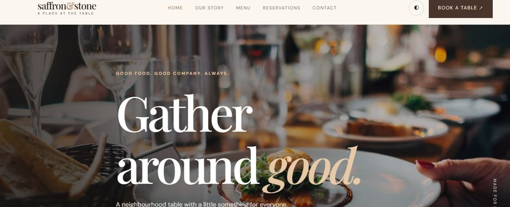
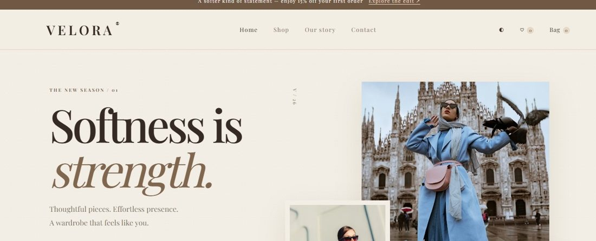
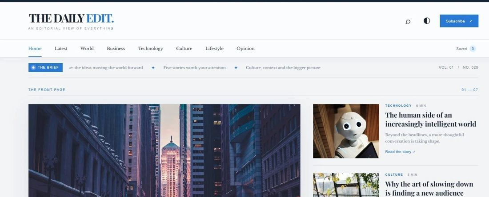
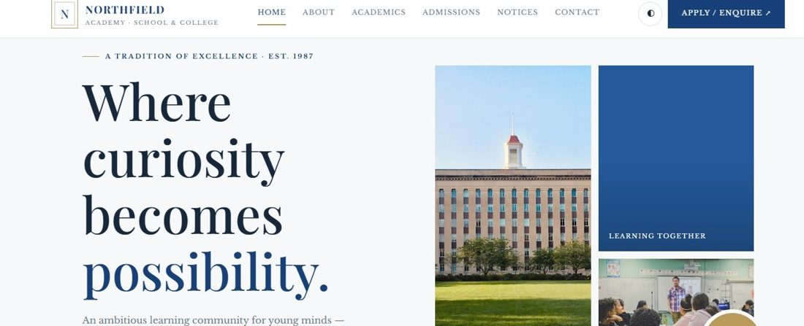
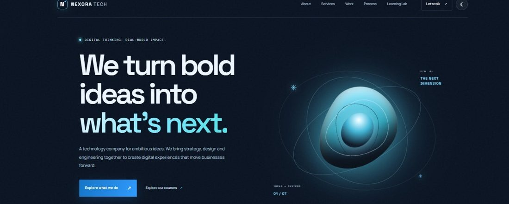
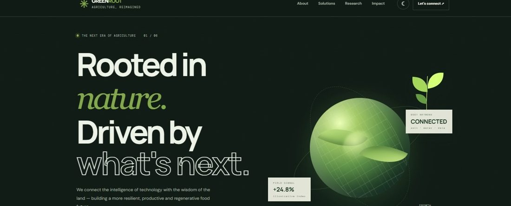

Saffron & Stone
A warm restaurant experience with a menu, gallery and reservation form.
Open to remote work
Hello, I'm
I turn ideas into clean, interactive and visually appealing websites, learning something new with every project I make.
01 — About
I enjoy exploring how thoughtful design and useful interactions come together on a page.
Right now I'm building a strong foundation, practising consistently and getting a little better with every website. Everything here is a self-initiated project made while I learn.
02 — Projects

A warm restaurant experience with a menu, gallery and reservation form.

A refined fashion store concept with collections, a wishlist and a bag.

A digital newspaper with topic filters, search and a reading list.

A multi-page school website with programmes, admissions and notices.

A tech-company concept with services, a learning lab and enrollment page.

An agriculture-technology concept with an impact section and FAQ.
All projects are self-initiated website concepts made while learning frontend development.
03 — Services
Clean, easy-to-use pages that adapt to phones, tablets and larger screens.
Simple, thoughtful spaces to introduce yourself and show your work online.
Clear pages to present a small business, product or service online.
Useful frontend details like navigation, buttons, filters and small interactions.
04 — Process
Start with the idea, the audience and what the page needs to do.
Choose colours, type and layout that feel right for the idea.
Write clean HTML, CSS and JavaScript that works on every screen.
Check it on phones and desktops, then polish the details.
05 — Toolkit
06 — FAQ
No. All six are self-initiated website concepts that I made while learning frontend development.
HTML, CSS and JavaScript, along with plenty of practice and design thinking.
I'm open to remote work. Send me a message with your idea and I'll get back to you.
Yes. My work is on GitHub, and you can find my profile in the links at the bottom of this page.
Yes. I design them to be responsive, so they adapt to phones, tablets and desktops.
Let's work together
07 — Contact
I'd love to hear about your idea, a project or an opportunity.